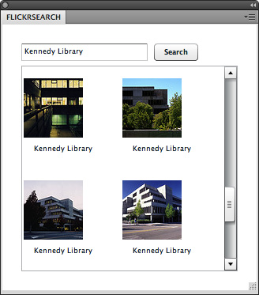

Flickr Search Panel: Connect on Preferences
The fifth part of the Flickr Search Panel is programming the Adobe Photoshop Panel to only connect to the internet if it is allowed by the user's preferences. The developer will program in ActionScript to determine whether the user has allowed connection to the internet. Otherwise, the developer will program in ActionScript to give an alert to the user and prevent connection to Flickr. After programming in ActionScript, the developer will copy the Adobe Flex Builder produced SWF file to the Adobe Photoshop Panels folder. The result is a fixed-size Flickr Search Panel with the font family, font size, and the panel's background color initialized to the same characteristics as the panels in Adobe Photoshop with a flyout menu allowing the user to change the panel's background color. Another result for the Flickr Search Panel is to honor the user's preferences if one chooses not to connect to the internet.
Instructions:
- The red colored text are the changes made to the Script tag in FlickrSearch.mxml:
<mx:Script> <![CDATA[ import mx.controls.Alert; import mx.events.FlexEvent; import mx.rpc.events.*; import mx.collections.*; import com.adobe.csxs.core.CSXSInterface; import com.adobe.csxs.events.*; import com.adobe.csxs.types.*; private var defaultColor:String; private var offline:Boolean; [Bindable] private var photoFeed:ArrayCollection; private function init():void{ searchText.addEventListener(FlexEvent.ENTER, requestPhotos); var windowSize:WindowGeometry = new WindowGeometry(100,100,350,350); CSXSInterface.getInstance().requestStateChange(StateChangeEvent.WINDOW_RESIZE, windowSize); var result:SyncRequestResult = CSXSInterface.instance.getHostEnvironment(); var hostData:HostEnvironment = result.data; var skinInfo:AppSkinInfo = hostData.appSkinInfo; offline = hostData.isAppOffline; defaultColor = skinInfo.panelBackgroundColor.color.rgb; this.setStyle("backgroundGradientColors", [defaultColor, defaultColor]); this.setStyle("fontFamily", skinInfo.baseFontFamily); this.setStyle("fontSize", skinInfo.baseFontSize); var xmlMenu:XML = <Menu> <MenuItem Label="Photoshop Color Background"/> <MenuItem Label="---"/> <MenuItem Label="White Background"/> <MenuItem Label="Red Background"/> <MenuItem Label="Green Background"/> <MenuItem Label="Blue Background"/> </Menu>; CSXSInterface.getInstance().setPanelMenu(xmlMenu); CSXSInterface.getInstance().addEventListener(MenuClickEvent.FLYOUT_MENU_CLICK, onMenuHandler); } private function onMenuHandler(inEvent:MenuClickEvent):void { if ("Photoshop Color Background" == inEvent.menuName) { this.setStyle("backgroundGradientColors", [defaultColor, defaultColor]); } else if ("White Background" == inEvent.menuName) { this.setStyle("backgroundGradientColors", [0xffffff, 0xffffff]); } else if ("Blue Background" == inEvent.menuName) { this.setStyle("backgroundGradientColors", [0x005a8c, 0x005a8c]); } else if ("Red Background" == inEvent.menuName) { this.setStyle("backgroundGradientColors", [0x8c0000, 0x8c0000]); } else if ("Green Background" == inEvent.menuName) { this.setStyle("backgroundGradientColors", [0x008c00, 0x008c00]); } else { Alert.show("Unknown selection: " + inEvent.menuName); } } private function requestPhotos(event:Event):void{ if(!offline){ flickrService.cancel(); var params:Object = new Object(); params.format = "rss_200_enc"; params.tags = searchText.text; flickrService.send(params); } else { Alert.show("Make sure 'Allow Extensions to Connect to the Internet' is enabled "+ "located in Preferences under Plug-Ins", "Disabled Internet Connection"); } } private function photoHandler(event:ResultEvent):void{ photoFeed = event.result.rss.channel.item as ArrayCollection; } private function faultHandler(event:FaultEvent):void{ Alert.show("Not able to load photos from services","Error"); } ]]> </mx:Script>Code Walkthrough: The private global variable
offlineis used to retrieve whether or not the user has allowed any Adobe Photoshop Panels to connect to the internet throughisAppOfflineretrieved fromhostData. In the functionrequestPhotos, anifstatement is placed to determine whether or not to request images from Flickr or give an alert informing the user of the situation. - Go to Run > Run FlickrSearch to preview the design area in the web browser.
- Close the web browser.
- Close Adobe Flex Builder.
- Open the FlickrSearch folder on the desktop.
- Open the bin-debug folder.
- Copy FlickrSearch.swf into the Panels folder under the Adobe Photoshop CS5\Plug-ins\ folder located under:
- Applications for Macintosh
- Program Files for Windows
- Open Adobe Photoshop.
- Go to Windows > Extensions > FlickrSearch. The Flickr Search Panel opens as a panel like seen below:
The Flickr Search Panel has text input, a button to search on Flickr, and a layout to display the images retrieved. By default, the panel's background color, font size, and font family are the same as the ones in Adobe Photoshop. - Type in metadata tags in the text input field to search for images on Flickr. Metadata will also be discussed in Per Layer Metadata Panel tutorial. For this example, Kennedy Library will be used as the metadata tags with the following image results:
Note: The image results for "Kennedy Library" will not necessary be the same as the one shown in this tutorial. - The Flickr Search Panel can also change different background colors in the flyout menu. Select the second icon from the top right:

- The possible background colors of the Flickr Search Panel are shown below:

- Go to Preferences > Plug-Ins... located under:
- Photoshop for Macintosh
- Edit for Windows
- Uncheck Allow Extensions to Connect to the Internet.
- Close the Flickr Search Panel.
- Close Adobe Photoshop.
- Open Adobe Photoshop.
- Go to Windows > Extensions > FlickrSearch.
- Type in metadata tags in the text input field to search for images on Flickr. For this example, Kennedy Library will be used as the metadata tags with the following error:

- Go to Preferences > Plug-Ins... located under:
- Photoshop for Macintosh
- Edit for Windows
- Check Allow Extensions to Connect to the Internet.
- Close the Flickr Search Panel.
- Close Adobe Photoshop.